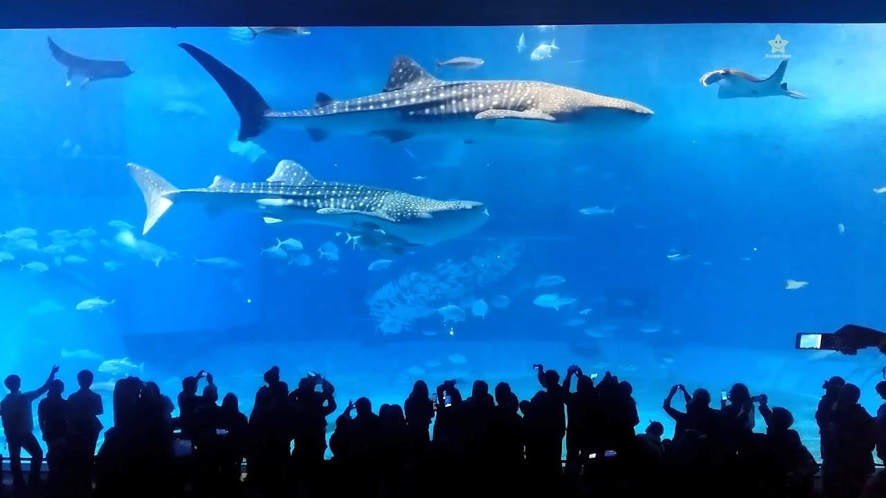

소개
고래상어는 여과섭식상어의 일종으로 현존하는 어류 중 가장 크기가 크다. 확인된 개체 중 가장 크기가 큰 것은 길이 18.8m, 무게 21.5톤 이다.
판새류의 하위 분류인 고래상어과 고래상어목의 유일한 종이다. 고래상어는 약 6천만년 전부터 살아온 걸으로 알려져 있다.
외관
고래상어는 폭이 1,5m까지 늘어날 수 있는 입을 가지고 있으며, 300개에서 350개의 작은 이빨을 가졌고, 10개의 여과 기관이 있다. 고래상어는 10개의 큰 아가미를 가지고 있다. 머리는 넓고 납작하며 앞에 2개의 작은 눈이 달렸다.고래상어는 전체적으로 회색인 편이며, 하얀색 복부를 가지고 있다.
피부에는 개체마다 다른 옅은 노란색의 반점과 줄무늬를 가지고 있다.
고래상어는 옆면에 3개의 돌출된 부분이 있다. 피부의 두께는 약 10cm 정도 한다. 한 쌍의 등지느러미와 가슴지느러미를 가지고 있기도 하다.
성어의 고리는 약간 초승달 모양이지만, 치어의 고리는 낮은쪽 지느러미가 위쪽 지느러미보다 작은 모양이다. 고래상어의 분수공은 눈 바로 위에 있다.
특징
고래상어의 수명은 70년 정도이며, 열대 지방의 따듯한 물에서 발견된다. 고래상어는 아주 큰 입을 가지고 있으며, 플랑크톤을 주식으로 한다. 큰 크기는 지녔지만 고래상어는 사람을 공격하지 않는다. 유순한 성격으로, 사람들을 따르는 경우도 있다. 일본에서는 오사카 가이유칸 수족관에서 2마리의 고래상어를 사육하고 있으며, 미국의 조지아 수족관에서도 4마리의 고래상어를 사육하고 있다.
